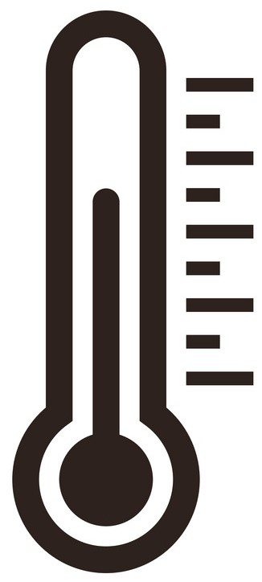
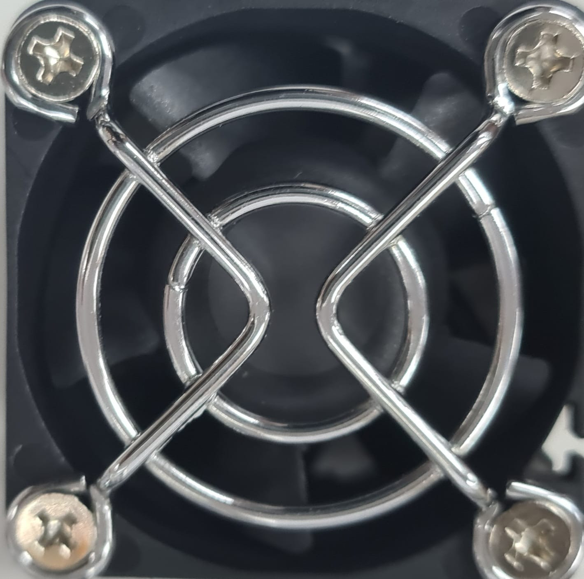
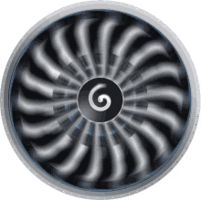

<div id="navbar">
  <button mat-raised-button color="primary" (click)="getTagValue('s100_tag5')">Home</button>
</div>
<div id="body">
  <p style="font-weight: bold; font-family:Arial, sans-serif; font-size:x-large;">DASHBOARD</p>
  <div class="row">
    <div class="container" style="height: max-content; margin-top: 20px;">
      <div class="card" style="width: 40%; justify-content: center;">
        <h4 style="font-size: xx-large; letter-spacing: 1px;">Motor Control</h4>
        <p>On and Off</p>
        <mat-button-toggle-group style="justify-content: center;">
          <mat-button-toggle (click)="setTagValue('Motor', 1)">
            On
          </mat-button-toggle>
          <mat-button-toggle (click)="setTagValue('Motor', 0)">
            Off
          </mat-button-toggle>
        </mat-button-toggle-group>
      </div>
      <div class="card" style="width: 25%;">  
        <p>
          <mat-button-toggle-group>
            <mat-button-toggle (click)="toggle1()" id="bt1">
              On
            </mat-button-toggle>
            <mat-button-toggle (click)="toggle()" id="bt2">
              Off
            </mat-button-toggle>
          </mat-button-toggle-group>
        </p>
      </div>
      <div class="card" style="width: 25%;">
        {{x}}
      </div>
    </div>
  </div>
  
  <div class="row">
    <div class="container" style="height: max-content;">
      <div class="card" style="width: 61.5%; height: 350px;">
        <!--thermometer image-->
        
        <!--progress bar for temperature,need to combine it with a thermometer picture-->
        <mat-progress-bar mode="determinate" value="getTagValue('temperature')"></mat-progress-bar>
      </div>
      <div class="card" style="width: 30%; height: 350px;">
        <!--to stimualte error using distance sensor-->
        <mat-slider
          thumbLabel
          color="primary"
          tickInterval="100"
          step="1"
          min="0"
          max="1500"
          aria-label="units"
          value="setTagValue('distance_sensor')">
        </mat-slider>
      </div>
    </div>
  </div>

  <div class="row">
    <div class="container" style="height: max-content;">
      <div class="card" style="width: 30%; height: 250px;">
        yes
      </div>
      <div class="card" style="width: 30%; height: 250px;">
        yes
      </div>
      <div class="card" style="width: 30%; height: 250px;">
        yes
      </div>
    </div>
  </div>
</div>

<!--motor on off function-->
<ng-container *ngIf="Off" id="bt2">
  
</ng-container>
<ng-container *ngIf="On" id="bt1" >
    
</ng-container>
